Rubys klädkod
Tycker du det är jobbigt att välja kläder på morgonen? Skulle du vilja att det fanns ett program som valde kläder åt dig efter några enkla regler? Om det till exempel var fredag så skulle programmet välja ut randiga kläder; eller om det var soligt skulle programmet välja shorts. I den här uppgiften ska du få skapa en prototyp till precis ett sådant program! Du skall få koda ett program som hjälper flickan Ruby att välja kläder. Denna uppgift är en variant på uppgiften Dresscode från boken Hello Ruby.
Ett exempel på hur programmet kan se ut hittar du här:
men tänk på att du kommer göra ett program som kanske ser helt annorlunda ut.
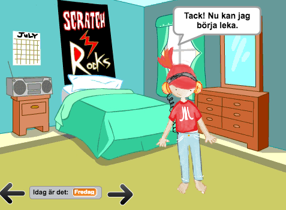
För att klara uppgiften behöver du ett antal bilder på Ruby i olika kläder. Dessa kan du ladda ner från här.
Delmoment 1: Komma på regler
Det första du behöver göra är att komma på de regler som avgör vilka kläder Ruby skall ha på sig. Det är främst vilken veckodag som ska avgöra vad Ruby ska ha på sig. Det är din fantasi som styr och det är helt upp till dig vilka regler som skall gälla.
Ett förslag är följande:
På måndagar klär sig Ruby i röda eller gröna kläder
På tisdagar klär sig Ruby i kläder med röda prickar
På fredagar klär sig Ruby i kläder som INTE är svarta
På helgen klär sig Ruby i valfria kläder
Du kan också tänka på olika aktiviteter som Ruby kan ha för sig som t.ex. lyssna på musik. Vad skall Ruby ha för kläder eller saker ska Ruby ha på sig då?
Du kan också tänka på vad det är för väder och om Ruby skall vara inomhus eller utomhus. Vad skall Ruby ha på sig om hon skall gå ut och det regnar?
Om du tycker det är svårt att komma på regler kan du utgå ifrån vad du själv brukar ha på dig på olika dagar eller när du gör roliga saker.
Tänk på att kläderna som finns i dina regler också måste finnas tillgängliga som bilder.
Delmoment 2: Bakgrund och en sprajt
Vi börjar med en bakgrund och en sprajt för Ruby!
Skapa ett nytt projekt och ta bort katten.
Välj en bakgrund till från biblioteket som passar som ett rum. Förslag är bedroom1 och bedroom2, men du kanske tycker att Ruby ska bo på ett slott!

Välj en ny sprajt genom att ladda upp en bild från din dator. Välj bilden där Ruby är i underkläderna.
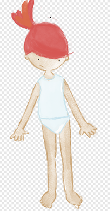
Bilden med Ruby i underkläder
Sätt namnet på sprajten till Ruby. Placera den på ett lämpligt ställe i rummet.
Du kan förminska sprajten lite om du tycker den är för stor.
Lägg till flera klädslar till sprajten genom att ladda upp bilder från din dator. Välj de kläder och utseende på Ruby som behövs för de reglerna du satte upp i Delmoment 1.
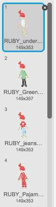
Skapa ett skript för Ruby som säger:
Startar när START klickas på
Byt klädsel till "RUBY_underware"
Säg ”Hej mitt namn är Ruby! Jag måste välja kläder. Kan du hjälpa mig?"
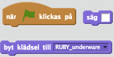
Dessa block behöver du för punkt 7.
Delmoment 2: Acceptera uppdraget
När programmet startar ska Ruby fråga användaren om den vill hjälpa till med att välja kläder. Användaren ska sedan acceptera uppdraget genom att klicka på en knapp.
Lägg till en sprajt från biblioteket, till exempel ”Button1”.
Placera sprajten någonstans i rummet.
Gå till fliken för KLÄDSLAR och använd textverktyget för att skriva ”JA” på knappen.
Skapa ett skript för knappen som säger
Skapa ett andra skript för sprajten som säger
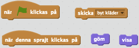
Dessa block behöver du delmoment 3.
Delmoment 3: Välja dag
Många av de reglerna som du skapade i Delmoment 1 är beroende på vilken dag det är. Nu skall du få koda vilken veckodag det är. Det finns flera möjliga sätt att göra det på och du får själv välja vilken du tycker är bäst.
Fråga användaren vad det är för dag
Slumpa fram en dag
Gör en liten enkel kalender
Här får du hjälp hur du kan göra alternativ 1 och 2. Alternativ 3 är lite svårare och du hittar instruktioner under utmaningar i slutet på uppgiften.
Fråga användaren:
Skapa en variabel som heter ”Idag är det: ”. Den kan visas på skärmen.
Skapa ett skript för Ruby som säger:
När den tar emot meddelandet ”byt klädsel”
Fråga ”Vad är det för dag?” och vänta
Sätt ”Idag är det: ” till ”svar”
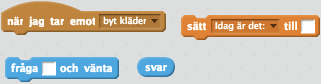
Block du behöver för punkt 2.
Slumpa fram en dag:
Skapa en variabel som heter ”veckodag”. Den ska inte visas på skärmen.
Skapa en variabel som heter ”Idag är det: ”. Den kan visas på skärmen.
Skapa ett skript för Ruby som säger:
När den tar emot meddelandet ”byt klädsel”
Sätt ”veckodag” till ett slumptal mellan 1 och 7
Sätt ”Idag är det: ” till ”Måndag" OM ”veckodag” är 1
Sätt ”Idag är det: ” till "Tisdag" OM ”veckodag” är 2
Sätt ”Idag är det: ” till "Onsdag" OM ”veckodag” är 3
Sätt ”Idag är det: ” till "Torsdag" OM ”veckodag” är 4
Sätt ”Idag är det: ” till "Fredag" OM ”veckodag” är 5
Sätt ”Idag är det: ” till "Lördag"" OM ”veckodag” är 6
Sätt ”Idag är det: ” till "Söndag" OM ”veckodag” är 7
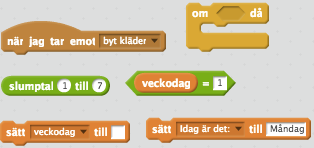
Block du behöver för punkt 3. Tänk på att du behöver använda vissa block mer än en gång!
Testa programmet! Vad händer om du trycker på Ja-knappen? Visas veckodagen på skärmen?
Delmoment 4: Byta kläder på Ruby
Nu är det dags att implementera dina regler från Delmoment 1. ”Implementera” innebär att du kodar en strategi eller logik som du har bestämt innan. I det här fallet handlar det om logiken eller reglerna för vad kläder Ruby ska ha på sig.
Fortsätt på skriptet du gjorde ovan som startar när sprajten tar emot meddelandet ”byt klädsel”.
Använd ett OM-block och variabeln ”Idag är det: ” för att utföra ett klädbyte
Repetera med fler OM-block tills du har lagt in alla regler
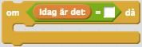
Det är sådana här kodblock du behöver skapa för att utföra de olika klädbytena.
Efter du har kodat alla OM-block så säg ”Tack! Nu kan jag börja leka.”
Delmoment 5: Välja mellan två kläder
Om du vill låta användaren välja mellan två slumpmässigt valda klädslar kan du till exempel göra så här:
Skicka meddelandet ”välj kläder” OM [det är helg]. Här får du själv välja när du meddelandet ska skickas och när två kläder ska slumpas fram.
Skapa två variabler som heter ”val1” och ”val2” och som inte ska synas
Skapa ett skript för Ruby som säger
När jag tar emot ”välj kläder”
Sätt ”val1” till ett slumptal mellan 2 och 9. Byt ut 9 mot det antal klädslar du lade till sprajten.
Sätt ”val2” till ”val1”
REPETERA tills ”val1” INTE ÄR LIKA ”val2”: Sätt ”val2” till ett slumptal mellan 2 och 9.
Säg ”Ska jag ha den här…?”
Byt klädsel till ”val1”
Vänta 4 sekunder
Säg ”… eller den här?”
Byt klädsel till ”val2”
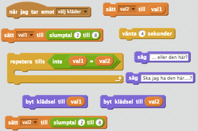
Dessa block behöver du för koden ovan.
Nu måste användaren välja klädsel ett eller två på något sätt. Ett sätt du kan göra det på är att skapa två knappar som det står ”1” och ”2” på.
Välj en sprajt från biblioteket. Ett exempel är ”Ball”.
Sätt namnet på sprajten till Val1
Skapa ett skript för Val1 som säger:
När START klickas på
Göm sprajten
Skapa ett till skript för Val1 som säger:
Skapa ett tredje skript för sprajten som säger:
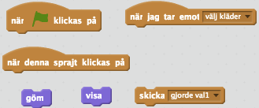
Dessa block behöver du för koden till Val1.
Kopiera nu sprajten så du har två knappar. Kalla den nya sprajten Val2.
Ändra klädseln på sprajten så att den har en annan färg.
Använd textverktyget och skriv ”1” på Val1 och ”2” på Val2.
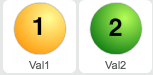
Ändra i skriptet för Val2 så att meddelandet ”gjorde val2” skickas när sprajten klickas på.
Skapa också skript så att Val2 döljs när Val1 klickas på, och tvärtom. Båda sprajterna ska ju försvinna när användaren har gjort sitt val.
Skapa ett skript för Ruby som säger

Skapa ett liknande skript för Ruby när sprajten tar emot meddelandet ”gjorde val2”.
Testa programmet! Vad händer när du är på en veckodag där två kläder skall slumpas fram? Visas de två valen på skärmen med lite mellanrum?
Delmoment 6: Andra aktiviteter och val
Nu har du en stomme till ett program där du har kodat vilka kläder Ruby skall få på olika dagar. Nu är det fritt fram att koda andra aktiviteter och val. Det är väldigt fritt och kanske känner du att det är svårt att komma på hur du ska koda. Här är några tips.
Utgå ifrån koden när Ruby tar emot meddelandet ”byt käder” och där du har lagt in OM-block för att göra olika saker på olika veckodagar.
Om du vill att något särskilt ska hända på en specifik dag, skicka ett meddelande på den dagen.
Skapa ett nytt skript för Ruby eller en annan sprajt som körs när det meddelandet tas emot.
I det skriptet lägger du in all kod som gör att Ruby till sist får rätt kläder
Du kan till exempel fråga användaren om det är soligt eller regnigt väder
Du kan visa en sprajt på skärmen och använda den för att få information från användaren. Tänk på hur du kodade knappar Val1 och Val2 ovan.
När du har fått ett svar från användaren, genom variabeln ”svar” eller genom att meddelandet har skickats så byter du kläder på Ruby.
Självklart kan du kombinera de två sätten att få information från användaren om du till exempel först vill fråga om det är regnigt och sedan fråga om Ruby vill vara inne eller ute.
Här kommer ett konkret exempel. Det går ut på att på fredagar så vill Ruby lyssna på musik.
Skapa ett OM-block som kollar om ”Idag är det: ” är lika med ”Fredag”
Byt klädsel till "RUBY_jeans_tshirt"
Säg ”Kan du hitta mina hörlurar?”
Skicka meddelandet ”hitta hörlurar”
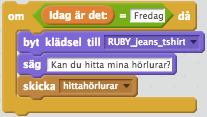
Lägg till en sprajt genom att ladda upp bilden för hörlurarna från din dator.
Skapa ett skript för hörlurarna som ser till att de är gömda när START klickas på
Skapa sedan ett skript till för hörlurarna som visar dem när meddelandet ”hitta hörlurar” tas emot.
Skicka meddelandet ”hörlurar” när sprajten klickas på.
Skapa ett skript för Ruby som säger
När meddelandet ”hörlurar” tas emot
Byt klädsel till "RUBY_jeans_tshirt_headphones"
Säg ”Tack! Nu kan jag börja leta”
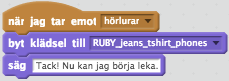
Färdig!
Grattis, nu har du gjort klart uppgiften.
Glöm inte att spara ditt projekt! Döp det gärna till uppgiftens namn så att du enkelt kan hitta den igen.
Testa ditt projekt
Visa gärna någon det som du har gjort och låt dem testa. Tryck på DELA för att andra ska kunna hitta spelet på Scratch. Gå ut till projektsidan och låt någon annan testa spelet!
Utmaningar
En enkel kalender
Det här är ett tredje förslag på hur veckodag kan kodas istället för att fråga användaren eller slumpa fram dagen. Det kommer finnas två pilar på skärmen så att användaren enkelt kan bläddra mellan de olika veckodagarna.
Ungefär så här kommer kalendern se ut.
Skapa en variabel som heter ”idag” och som inte ska visas på skärmen.
Skapa en lista som heter "veckodagar". Den ska inte visas på skärmen. Du hittar knappen för att skapa lista på fliken DATA.
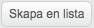
En lista är som en variabel som kan innehålla flera värden. I din lista skall du lägga in namnet på alla veckodagarna.
Markera scenen och skapa ett skript för den som säger
När START klickas på
Ta bort allt i ”veckodagar”
Lägg till ”Måndag" i ”veckodagar”
Lägg till ”Tisdag" i ”veckodagar”
Lägg till "Onsdag" i ”veckodagar”
Lägg till "Torsdag" i ”veckodagar”
Lägg till "Fredag" i ”veckodagar”
Lägg till ”Lördag" i ”veckodagar”
Lägg till ”Söndag" i ”veckodagar”
Sätt ”idag” till ett slumptal mellan 1 och 7
Sätt ”Idag är det: ” till objekt ”idag” i ”veckodagar”
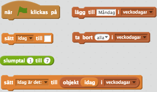
Dessa block behöver du för koden ovan. Tänk på att du måste lägga till fler block för att lägga in alla dagar i listan.
Lägg till en sprajt från biblioteket som ser ut som en pil, till exempel Arrow2.
Förminska pilen så att den blir lagom stor och placera den till höger om variabeln ”Idag är det: ”
Skapa ett skript för pilen som säger:
Startar när sprajten klickas på
OM ”idag” är mindre än 7: ändra ”idag” med 1
ANNARS: sätt ”idag" till 1
Sätt ”Idag är det: ” till objekt ”idag” i ”veckodagar”
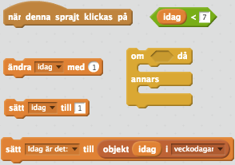
Dessa block behöver du för koden ovan.
Kopiera sprajten så att du har två pilar.
Ändra klädsen på den andra sprajten så att den pekar åt vänster.
Placera den till vänster om variabeln ”Idag är det: ”
Ändra i koden för vänster-pilen så den säger:
Startar när sprajten klickas på
OM ”idag” är större än 1: ändra ”idag” med -1
ANNARS: sätt ”idag" till 7
Sätt ”Idag är det: ” till objekt ”idag” i ”veckodagar”
Testa! Vad händer om du klickar på de olika pilarna? Vad händer om det är söndag och du klickar på höger-pilen?
Frågeställningar
Vad innebär det att du implementerar regler?
På vilka olika sätt kan du få information från användaren?
Vilka för- och nackdelar finns det med de olika sätt att få information från användaren?